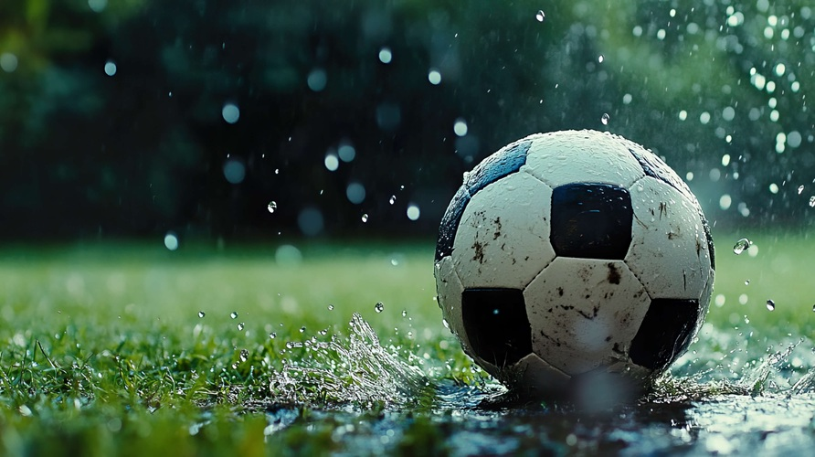

Graphics
QUESTIONS
JPEG is best for photograhps and images
GIFs are good for simple images like logos, icons, cartoons, animation.
It is unique because it can support high-quality images and it is also called alpha channal.
To resize a photo we can use an photo editing software like paint and change the pixel size to desigered size.
Because it reducies photo size and increase loding speed. Also it gives high-quality images. CSS will only resiz the scales of the image.